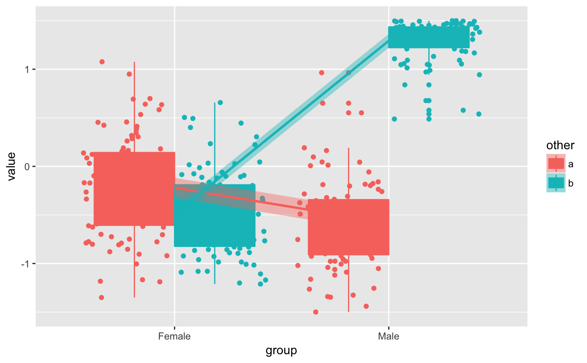

Make groups of genes using expression profile.
degPatterns.RdNote that this function doesn't calculate significant difference between groups, so the matrix used as input should be already filtered to contain only genes that are significantly different or the most interesting genes to study.
degPatterns(ma, metadata, minc = 15, summarize = "merge", time = "time", col = NULL, consensusCluster = FALSE, reduce = FALSE, cutoff = 0.7, scale = TRUE, pattern = NULL, groupDifference = NULL, eachStep = FALSE, plot = TRUE, fixy = NULL)
Arguments
| ma | log2 normalized count matrix |
|---|---|
| metadata | data frame with sample information. Rownames
should match |
| minc | integer minimum number of genes in a group that will be return |
| summarize | character column name in metadata that will be used to group
replicates. If the column doesn't exist it'll merge the |
| time | character column name in metadata that will be used as variable that changes, normally a time variable. |
| col | character column name in metadata to separate samples. Normally control/mutant |
| consensusCluster | Indicates whether using ConsensusClusterPlus
or |
| reduce | boolean reduce number of clusters using correlation values between them. |
| cutoff | integer threshold for correlation expression to merge clusters (0 - 1) |
| scale | boolean scale the |
| pattern | numeric vector to be used to find patterns like this from the count matrix. As well, it can be a character indicating the genes inside the count matrix to be used as reference. |
| groupDifference | Minimum abundance difference between the
maximum value and minimum value for each feature. Please,
provide the value in the same range than the |
| eachStep | Whether apply |
| plot | boolean plot the clusters found |
| fixy | vector integers used as ylim in plot |
Value
list wiht two items:
dfis a data.frame with two columns. The first one with genes, the second with the clusters they belong.passis a vector of the clusters that pass theminccutoff.plotggplot figure.hrclustering of the genes in hclust format.profilenormalized count data used in the plot.rawdata.frame with gene values summarized by biological replicates and with metadata information attached.summarisedata.frame with clusters values summarized by group and with the metadata information attached.
Details
It can work with one or more groups with 2 or
more several time points.
Before calculating the genes similarity among samples,
all samples inside the same time point (time parameter) and
group (col paramater) are collapsed together, and the mean
value is the representation of the group for the gene abundance.
Then, all pair-wise gene expression are calculated using
cor.test R function using kendall as the statistical
method. A distance matrix is created from those vsalues.
After that, cluster::diana() is used for the
clustering of gene-gene distance matrix and cut of the tree using
the divisive coefficient of the clustering, giving as well by diana.
Alernatively, if consensusCluster is on, it would used
ConsensusClusterPlus to cut the tree in stable clusters.
Finally, for each group of genes, only the ones that have genes
higher than minc parameter will be added to the figure.
The y-axis in the figure is the results of applying scale()
R function, what is similar to the meaning of creating a
Z-score where values are centered to the mean and
scaled to the standard desviation.
The different patterns can be merged to get similar ones into only one pattern. The expression correlation of the patterns will be used to decide whether some need to be merged or not.
Examples
data(humanGender) library(SummarizedExperiment)#>#>#>#>#> #>#> #> #> #> #>#> #> #>#> #> #> #> #> #> #> #>#>#> #>#> #> #>#>#>#>#> #> #> #> #>#>#>#> #>#> #> #>#> #>#> #> #>#> #> #>library(ggplot2)#> #>ma <- assays(humanGender)[[1]][1:100,] des <- colData(humanGender) des[["other"]] <- sample(c("a", "b"), 85, replace = TRUE) res <- degPatterns(ma, des, time="group", col = "other")#>#>#>#># Use the data yourself for custom figures ggplot(res[["normalized"]], aes(group, value, color = other, fill = other)) + geom_boxplot() + geom_point(position = position_jitterdodge(dodge.width = 0.9)) + # change the method to make it smoother geom_smooth(aes(group=other), method = "lm")